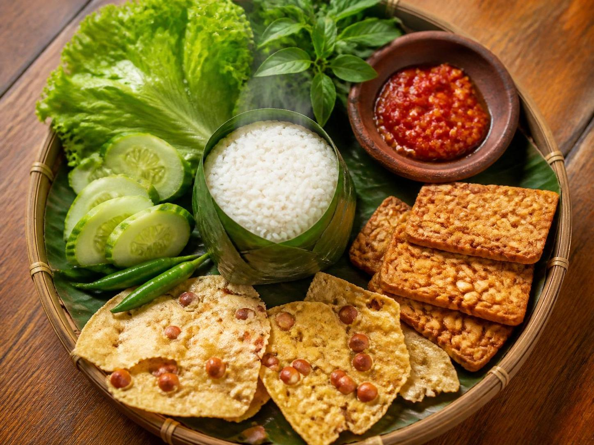

Mengenal Nasi Timbal Sunda dan Lalapan: Perpaduan Sederhana yang Istimewa

Kuliner Sunda dikenal dengan konsep "Segar, Asin, Pedas" yang selalu berhasil menggugah selera. Di antara banyaknya hidangan khas Sunda, ada satu kombinasi klasik yang kerap menjadi favorit banyak orang: Nasi Timbal dan Lalapan. Bukan sekadar nasi dan sayur, hidangan ini menyimpan keunikan rasa dan filosofi tersendiri.
Apa itu Nasi Timbal?
Berbeda dengan nasi putih biasa yang dimasak menggunakan rice cooker atau dandang besi, Nasi Timbal adalah nasi yang dimasak menggunakan bambu (biasa disebut simpai atau incuk). Nasi ini dibungkus daun pisang sebelum dimasukkan ke dalam bambu, lalu dipanggang dengan api kayu.
Hasilnya? Nasi dengan tekstur yang lebih pulen, sedikit keras di bagian pinggir (rempah), dan yang paling khas adalah aroma smoky atau wangi asap bambu dan daun pisang yang menguar. Nasi timbal biasanya berbentuk silinder memanjang karena mengikuti bentuk bambu.
Istimewanya Lalapan
Nasi timbal tidak lengkap tanpa Lalapan. Lalapan adalah sayuran mentah atau rebus yang disajikan mentah (lalap mentah) atau setengah matang.
Jenis sayuran yang biasa dijadikan lalapan sangat beragam, seperti:
- Kemangi
- Mentimun
- Kacang panjang
- Kol/Kubis
- Daun singkong
- Terong/Geuntis (biasanya direbus)
- Pare (untuk pecinta rasa pahit)
Kesegaran sayuran ini menjadi penyeimbang sempurna bagi nasi yang gurih dan lauk pauk yang digoreng atau dibakar.
Rahasia Rasa: Sambal Dadak
Roda penggerak utama dari Nasi Timbal dan Lalapan ada di Sambal. Sambal Dadak (sambal mentah yang baru diulek) adalah pilihan favorit. Perpaduan cabai rawit, gula, garam, dan terasi menciptakan rasa pedas yang "nendang" namun tetap disegarkan oleh campuran tomat merah. Sambal inilah yang menyatukan semua elemen di piring.
Tips Menyantap Nasi Timbal & Lalapan
- Gunakan Tangan: Makan nasi timbal dan lalapan dengan tangan akan memberi kesan makan yang rileks dan bersahabat.
- Pilih Lauk Tepat: Nasi timbal paling pas dipadukan dengan Ayam Goreng Kampung, Ikan Gurame Bakar, atau Ikan Mas Goreng Tepung.
- Jangan Lupa Kerupuk: Tambahkan kerupuk atau peyek untuk sensasi renyah.
Nasi Timbal dan Lalapan adalah bukti bahwa makanan sederhana bisa memiliki rasa yang luar biasa. Dengan nasi yang wangi, sayuran segar, dan sambal pedas, hidangan ini mampu menjadi "penawar" lelah dan solusi jitu bagi yang sedang bingung memilih menu makan siang atau malam.